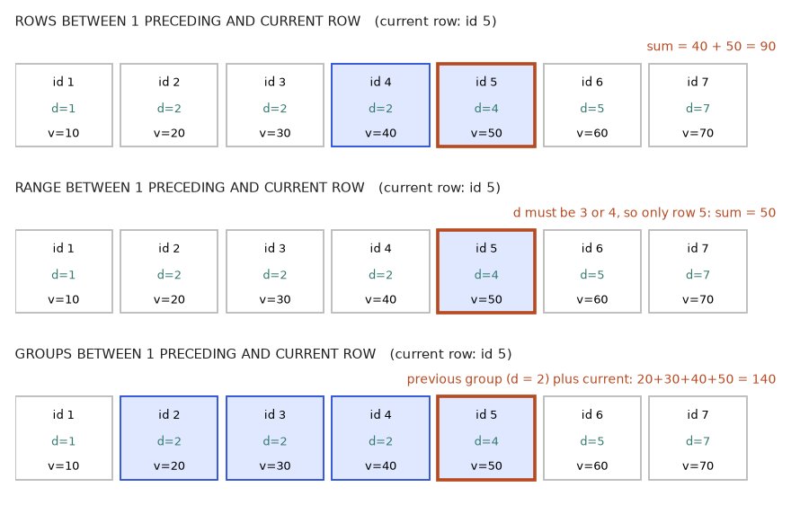

In this chapter
- 8.1 The OVER Clause: PARTITION BY and ORDER BY
- 8.2 Ranking Functions and Top-N per Group
- 8.3 Offset Functions: LAG, LEAD, FIRST_VALUE, LAST_VALUE, NTH_VALUE
- 8.4 Frames: Running Totals, Moving Averages, ROWS vs RANGE
- 8.5 Patterns: Gaps and Islands, Sessionization, Median
- 8.6 Frames in Depth: ROWS, RANGE and GROUPS When Values Tie
- Chapter recap
- Practice set
- Prompt pack
GROUP BY squeezes many rows into one. But many real questions need the detail rows and a number computed from their neighbours: "each order and its rank within the customer", "each month and the change from last month", "a running total of revenue", "the top 2 products in every category". These cannot be written cleanly with GROUP BY. Window functions solve them. They are the most tested SQL topic in data interviews and the biggest step up from beginner to professional. By the end you can rank, compare to the previous row, build running totals and moving averages, pick top-N per group, remove duplicates, and find streaks.
For this chapter we save a helper query as a view (a named, saved query; Chapter 9 explains views). It gives one row per order with its total value.
CREATE VIEW order_totals AS
SELECT o.order_id, o.customer_id, o.order_date, o.status,
SUM(oi.qty * oi.unit_price) AS total
FROM orders o JOIN order_items oi ON oi.order_id = o.order_id
GROUP BY o.order_id, o.customer_id, o.order_date, o.status;
SELECT COUNT(*) AS n_orders, SUM(total) AS all_revenue FROM order_totals;n_orders all_revenue
-------- -----------
14 145608.1 The OVER Clause: PARTITION BY and ORDER BY
OVER clause defines the window, PARTITION BY splits rows into groups, and ORDER BY orders rows inside each group.GROUP BY report prints one line per class: the class average. A window report keeps every student's line and adds a column with their class average next to their own mark. Each row looks through a "window" at the other rows of its class, and the rows are never merged.Words you need
- Window function: a function followed by
OVER (...). It computes a value for each row using a set of related rows. - Partition: a group of rows that belong together (like one class).
PARTITION BY customer_idmakes one partition per customer. NoPARTITION BYmeans one partition: the whole table. - Window ordering:
ORDER BYinsideOVERsorts the rows inside each partition, for functions that care about order. - Frame: the sub-range of the partition used for each row (Section 8.4).
Shape
function(args) OVER (
PARTITION BY col1, col2 -- optional: split into groups
ORDER BY col3 -- optional: order inside each group
ROWS BETWEEN ... AND ... -- optional: frame
)Any aggregate (SUM, AVG, COUNT, MIN, MAX) can be used as a window function by adding OVER. Window functions run after WHERE, GROUP BY and HAVING, and before ORDER BY and LIMIT. Because of this you cannot use them in WHERE; wrap the query in a CTE and filter outside (Snowflake, BigQuery and DuckDB have QUALIFY for this).
Real-world mapping
| Window idea | Example | Where it appears in the job |
|---|---|---|
SUM(x) OVER () | row's share of grand total | percent-of-total columns |
AVG(x) OVER (PARTITION BY k) | row vs its group's average | outlier flags |
ROW_NUMBER() OVER (...) | order within a user | "first purchase", dedup |
LAG(x) OVER (ORDER BY t) | previous value | change since last period |
Worked examples
Problem 8.1.1 (trivial) For each order, show its total and the share of all revenue. Show the first 4 orders. Predict: SUM(total) OVER () equals 14560 on every row.
| Step 1 | SUM(total) OVER () has empty brackets: one partition, the whole table, so every row sees 14560. |
|---|---|
| Step 2 | Share = total / 14560 × 100. |
SELECT order_id, total,
SUM(total) OVER () AS grand_total,
ROUND(100.0 * total / SUM(total) OVER (), 1) AS share_pct
FROM order_totals
ORDER BY order_id
LIMIT 4;order_id total grand_total share_pct
-------- ----- ----------- ---------
101 1660 14560 11.4
102 600 14560 4.1
103 1020 14560 7.0
104 400 14560 2.7- Compute Order 101:
1660 / 14560 = 0.1140, so 11.4 percent. Order 102:600 / 14560 = 0.0412, 4.1 percent. - Check All 14 rows are still there (a
GROUP BYwould have given one row). Columngrand_totalis 14560 on each row. - Answer Order 101 is 11.4 percent of revenue, 102 is 4.1, 103 is 7.0 (
1020 / 14560), 104 is 2.7. - Meaning You got detail and total on the same line, with no join back to a summary table.
Problem 8.1.2 PARTITION BY: compare each order to the average of that customer's orders. Show customers 1 and 5.
| Step 1 | AVG(total) OVER (PARTITION BY customer_id) makes one average per customer. |
|---|---|
| Step 2 | Subtract to see whether the order is above or below the customer's norm. |
SELECT customer_id, order_id, total,
ROUND(AVG(total) OVER (PARTITION BY customer_id), 1) AS cust_avg,
ROUND(total - AVG(total) OVER (PARTITION BY customer_id), 1) AS diff
FROM order_totals
WHERE customer_id IN (1, 5)
ORDER BY customer_id, order_id;customer_id order_id total cust_avg diff
----------- -------- ----- -------- ------
1 101 1660 1140.0 520.0
1 103 1020 1140.0 -120.0
1 106 1280 1140.0 140.0
1 111 600 1140.0 -540.0
5 107 360 753.3 -393.3
5 109 1500 753.3 746.7
5 113 400 753.3 -353.3- Compute Customer 1: totals 1660, 1020, 1280, 600; sum 4560, average
4560 / 4 = 1140. Customer 5: totals 360, 1500, 400; sum 2260, average2260 / 3 = 753.3. - Check For customer 1 the diffs are
+520, −120, +140, −540, and they add to 0 (a mean's deviations always cancel). - Answer Customer 1 average 1140; customer 5 average 753.3, with its refunded order 109 (1500) well above it.
- Meaning The filter
WHERE customer_id IN (1,5)ran before the window, so the averages use only those customers' rows, which is right here because partitions are per customer.
Problem 8.1.3 Window versus GROUP BY, side by side, and a named window. Count orders per customer in both ways.
SELECT customer_id, COUNT(*) AS n_orders
FROM order_totals GROUP BY customer_id ORDER BY customer_id;customer_id n_orders
----------- --------
1 4
2 3
3 1
4 2
5 3
6 1SELECT DISTINCT customer_id, COUNT(*) OVER w AS n_orders
FROM order_totals
WINDOW w AS (PARTITION BY customer_id)
ORDER BY customer_id;customer_id n_orders
----------- --------
1 4
2 3
3 1
4 2
5 3
6 1- Check Both give 4, 3, 1, 2, 3, 1 for customers 1 to 6.
- Answer Same numbers. The window version needed
DISTINCTto remove repeated rows. - Meaning If you want one row per group, use
GROUP BY. Use windows when you want to keep every row.WINDOW w AS (...)names a window so that you can reuse it.
The picture
GROUP BY customer_id PARTITION BY customer_id
--------------------- -------------------------------------
cust | n order | cust | total | cust_avg
1 | 4 (4 rows -> 1) 101 | 1 | 1660 | 1140 <- partition 1
3 | 1 103 | 1 | 1020 | 1140
... (all rows kept)
104 | 3 | 400 | 400 <- partition 2Connection to the real job
Percent-of-total, difference-from-average and "rank within group" columns are everyday dashboard needs. For example: each delivery's time next to the 90th percentile for its city.
Applications
- Data Analytics: share of total, deviation from group average, ranking customers.
- Data Science: group-wise features such as "order value divided by the customer's average".
- Data Engineering: de-duplicating records (Section 8.2).
- Education: compare each student's mark with the class average.
WHERE or GROUP BY. It fails (window functions are not allowed in WHERE). Compute it in a CTE or subquery, then filter. Another one: forgetting that WHERE runs first, so filtered-out rows are not in any window.Check yourself
- How many rows does a window function return per input row?
Answer: One (rows are not collapsed).
- What does
OVER ()with empty brackets mean?
Answer: One partition: the whole result.
- Can you use a window function in WHERE?
Answer: No. Use a CTE or subquery.
8.2 Ranking Functions and Top-N per Group
ROW_NUMBER, RANK and DENSE_RANK assign a position to each row in its partition. They are used to find the top N rows per group.ROW_NUMBER (never tie), RANK (ties share, then skip), DENSE_RANK (ties share, no skip).Words you need
- Tie: two rows with equal values in the ordering column.
- Percentile rank: the position of a row as a fraction between 0 and 1.
- Top-N per group: the best N rows inside each partition.
Definitions
| Function | Behaviour with ties | Values for 10, 20, 20, 30 (ascending) |
|---|---|---|
ROW_NUMBER() | unique number, ties broken arbitrarily unless you add a tiebreaker | 1, 2, 3, 4 |
RANK() | ties share a number; next number is skipped | 1, 2, 2, 4 |
DENSE_RANK() | ties share a number; no skip | 1, 2, 2, 3 |
NTILE(n) | splits ordered rows into n buckets of nearly equal size | e.g. NTILE(2): 1, 1, 2, 2 |
PERCENT_RANK() | (rank − 1) / (rows − 1) | 0, 0.33, 0.33, 1 |
CUME_DIST() | rows up to and including this value / total rows | 0.25, 0.75, 0.75, 1 |
Real-world mapping
| Function | Example | Where it appears in the job |
|---|---|---|
ROW_NUMBER | latest record per key | de-duplication |
RANK/DENSE_RANK | leaderboard with ties | competition tables, "top 3 salaries" |
NTILE(4) | quartiles of customers by spend | RFM scoring, deciles |
PERCENT_RANK | "this order is in the top 20 percent" | percentile labels |
Worked examples
Problem 8.2.1 (trivial) Rank all 14 orders by total, biggest first, using all five functions. Predict: three pairs of orders tie (1500 twice, 600 twice, 400 twice).
| Step 1 | Order by total DESC, and order_id as tiebreaker for ROW_NUMBER. |
|---|---|
| Step 2 | Add the other functions. RANK and DENSE_RANK must order by total only, otherwise the tiebreaker would hide the ties. |
SELECT order_id, total,
ROW_NUMBER() OVER (ORDER BY total DESC, order_id) AS row_num,
RANK() OVER (ORDER BY total DESC) AS rnk,
DENSE_RANK() OVER (ORDER BY total DESC) AS dense_rnk,
NTILE(4) OVER (ORDER BY total DESC, order_id) AS quartile,
ROUND(PERCENT_RANK() OVER (ORDER BY total DESC), 3) AS pct_rank
FROM order_totals
ORDER BY total DESC, order_id;order_id total row_num rnk dense_rnk quartile pct_rank
-------- ----- ------- --- --------- -------- --------
114 2100 1 1 1 1 0.0
112 1800 2 2 2 1 0.077
101 1660 3 3 3 1 0.154
105 1500 4 4 4 1 0.231
109 1500 5 4 4 2 0.231
106 1280 6 6 5 2 0.385
103 1020 7 7 6 2 0.462
108 900 8 8 7 2 0.538
102 600 9 9 8 3 0.615
111 600 10 9 8 3 0.615
110 440 11 11 9 3 0.769
104 400 12 12 10 4 0.846
113 400 13 12 10 4 0.846
107 360 14 14 11 4 1.0- Compute Sorted totals: 2100, 1800, 1660, 1500, 1500, 1280, 1020, 900, 600, 600, 440, 400, 400, 360.
RANK: 1, 2, 3, 4, 4, 6, 7, 8, 9, 9, 11, 12, 12, 14.DENSE_RANK: 1, 2, 3, 4, 4, 5, 6, 7, 8, 8, 9, 10, 10, 11.NTILE(4)of 14 rows: the first two buckets get 4 rows, the last two get 3 (14 = 4+4+3+3).PERCENT_RANK = (rank − 1) / 13: for rank 4,3 / 13 = 0.231; for rank 14,13 / 13 = 1. - Check Rank 4 appears twice and the next rank is 6, as computed. The last
RANKis 14 while the lastDENSE_RANKis 11, which confirms the "skip".ROW_NUMBERandNTILEuse the extraorder_idtiebreaker, so they never tie. - Answer See the printed table.
- Meaning If the question says "top 3 orders", then
RANK <= 3returns 3 rows, butRANK <= 4returns 5 rows because of the tie. Always decide how ties should behave before choosing the function.
Problem 8.2.2 Top-N per group: the two largest orders of each customer.
| Step 1 | Rank inside each customer: ROW_NUMBER() OVER (PARTITION BY customer_id ORDER BY total DESC). |
|---|---|
| Step 2 | Window functions cannot be filtered in WHERE, so put step 1 in a CTE and filter rn <= 2 outside. |
WITH ranked AS (
SELECT customer_id, order_id, total,
ROW_NUMBER() OVER (PARTITION BY customer_id ORDER BY total DESC, order_id) AS rn
FROM order_totals
)
SELECT customer_id, order_id, total, rn
FROM ranked
WHERE rn <= 2
ORDER BY customer_id, rn;customer_id order_id total rn
----------- -------- ----- --
1 101 1660 1
1 106 1280 2
2 114 2100 1
2 108 900 2
3 104 400 1
4 112 1800 1
4 105 1500 2
5 109 1500 1
5 113 400 2
6 110 440 1- Compute Customer 1: 1660 (101), 1280 (106). Customer 2: 2100 (114), 900 (108). Customer 3: only 104 (400). Customer 4: 1800 (112), 1500 (105). Customer 5: 1500 (109), 400 (113). Customer 6: only 110 (440).
- Check
2 + 2 + 1 + 2 + 2 + 1 = 10rows. - Answer Ten rows as printed.
- Meaning A customer with fewer than N orders simply returns fewer rows. This pattern is the answer to "top 3 products per category" and "latest 5 events per user".
Problem 8.2.3 Top product per category by revenue, keeping ties (RANK).
WITH rev AS (
SELECT p.category, p.name, SUM(oi.qty * oi.unit_price) AS revenue
FROM order_items oi JOIN products p ON p.product_id = oi.product_id
GROUP BY p.category, p.name
), ranked AS (
SELECT *, RANK() OVER (PARTITION BY category ORDER BY revenue DESC) AS r FROM rev
)
SELECT category, name, revenue FROM ranked WHERE r = 1 ORDER BY category;category name revenue
----------- --------- -------
Electronics Keyboard 6000
Home Desk Lamp 3600
Stationery Notebook 1120- Check Electronics: Keyboard 6000 beats Mouse 3000. Home: Desk Lamp 3600 (Mug never sold, so is absent). Stationery: Notebook 1120 beats Pen Pack 840.
- Answer Keyboard, Desk Lamp, Notebook.
- Meaning The
GROUP BYran first, then the window ranked the grouped rows. Windows can sit on top of aggregates.
Problem 8.2.4 Deduplication: a table has repeated emails; keep only the newest row per email.
CREATE TABLE raw_users (id INTEGER, email TEXT, updated_at TEXT);
INSERT INTO raw_users VALUES
(1,'a@x.com','2024-01-01'),(2,'a@x.com','2024-02-01'),
(3,'b@x.com','2024-01-15'),(4,'a@x.com','2024-02-01');
WITH numbered AS (
SELECT *, ROW_NUMBER() OVER (PARTITION BY email ORDER BY updated_at DESC, id DESC) AS rn
FROM raw_users
)
SELECT id, email, updated_at FROM numbered WHERE rn = 1 ORDER BY id;id email updated_at
-- ------- ----------
3 b@x.com 2024-01-15
4 a@x.com 2024-02-01- Check
a@x.comhas three rows, two share the latest date 2024-02-01 (ids 2 and 4). The tiebreakerid DESCpicks id 4.b@x.comhas one row (id 3). - Answer Rows with id 3 and 4 survive.
- Meaning The tiebreaker matters: without it, the winner among ties is arbitrary and can change between runs. Dedup this way before loading into a warehouse.
The picture
PARTITION BY category ORDER BY revenue DESC
Electronics: Keyboard 6000 (rn 1) Mouse 3000 (rn 2)
Home: Desk Lamp 3600 (rn 1)
Stationery: Notebook 1120 (rn 1) Pen Pack 840 (rn 2)
WHERE rn = 1 keeps the first row of each box.Connection to the real job
"Top N per group", "latest record per key" and "remove duplicates" are three of the five most common SQL interview problems, and daily work for data engineers. NTILE drives RFM scoring (Chapter 12).
Applications
- Data Analytics: top products, top customers, deciles of spend.
- Data Engineering: dedup on
ROW_NUMBER = 1, keep latest per key (CDC feeds). - Machine Learning: train/validation splits by
NTILE, stratified samples. - Logistics: slowest 5 deliveries per city.
ROW_NUMBER with no tiebreaker, and using RANK for "top 1 per group" without realising ties return several rows. Also, ORDER BY inside OVER only orders the window; the final result order needs its own ORDER BY.Check yourself
- Ranks of values 5, 5, 7 (descending 7, 5, 5) with
RANK?
Answer: 1, 2, 2.
- Same with
DENSE_RANKif there were one more value of 3 after them?
Answer: 7 is 1, 5 and 5 are 2, 3 is 3 (no skip).
- Why use a CTE to filter
ROW_NUMBER() = 1?
Answer: Window functions cannot be in WHERE.
8.3 Offset Functions: LAG, LEAD, FIRST_VALUE, LAST_VALUE, NTH_VALUE
LAG looks at an earlier row, LEAD at a later row, and FIRST_VALUE, LAST_VALUE and NTH_VALUE pick values by position.LAG is "the cell above"; LEAD is "the cell below". FIRST_VALUE is the top of the group; LAST_VALUE the bottom.Definitions
| Function | Returns |
|---|---|
LAG(x, n, default) | the value of x from n rows earlier (default 1) in the window order; default if there is none (else NULL) |
LEAD(x, n, default) | the value n rows later |
FIRST_VALUE(x) | x from the first row of the frame |
LAST_VALUE(x) | x from the last row of the frame (see the trap below) |
NTH_VALUE(x, n) | x from the n-th row of the frame |
Real-world mapping
| Function | Example | Where it appears in the job |
|---|---|---|
LAG(revenue) | last month's revenue | MoM growth |
LAG(revenue, 12) | same month last year | YoY growth |
LAG(order_date) | days since previous order | churn and repeat-purchase analysis |
FIRST_VALUE | first purchase category | acquisition analysis |
Worked examples
Problem 8.3.1 Month-over-month growth of paid revenue.
| Formula | growth % = (this month − previous month) / previous month × 100 |
|---|---|
| Step 1 | Monthly paid revenue in a CTE: 2260, 2520, 2980, 4900. |
| Step 2 | LAG(revenue) brings the previous month's value onto each row. |
WITH monthly AS (
SELECT substr(order_date,1,7) AS month, SUM(total) AS revenue
FROM order_totals WHERE status = 'paid' GROUP BY 1
)
SELECT month, revenue,
LAG(revenue) OVER (ORDER BY month) AS prev_revenue,
revenue - LAG(revenue) OVER (ORDER BY month) AS change,
ROUND(100.0 * (revenue - LAG(revenue) OVER (ORDER BY month))
/ LAG(revenue) OVER (ORDER BY month), 1) AS growth_pct
FROM monthly ORDER BY month;month revenue prev_revenue change growth_pct
------- ------- ------------ ------ ----------
2024-01 2260 NULL NULL NULL
2024-02 2520 2260 260 11.5
2024-03 2980 2520 460 18.3
2024-04 4900 2980 1920 64.4- Compute Feb:
(2520 − 2260) / 2260 = 260 / 2260 = 0.1150, 11.5 percent. Mar:460 / 2520 = 0.1825, 18.3 percent. Apr:1920 / 2980 = 0.6443, 64.4 percent. January has no previous month, so everything is NULL. - Check
2260 + 260 = 2520,2520 + 460 = 2980,2980 + 1920 = 4900. - Answer Growth: NULL, 11.5, 18.3, 64.4 percent.
- Meaning April's jump is large. Before celebrating, ask whether April simply had more refunds fixed or a campaign. The query tells you what, not why.
Problem 8.3.2 Year-over-year with LAG(revenue, 12): we build a 14-month sales table (2023-01 to 2024-02).
CREATE TABLE sales_m (month TEXT, revenue INTEGER);
INSERT INTO sales_m VALUES
('2023-01',100),('2023-02',110),('2023-03',120),('2023-04',130),('2023-05',140),('2023-06',150),
('2023-07',160),('2023-08',170),('2023-09',180),('2023-10',190),('2023-11',200),('2023-12',210),
('2024-01',130),('2024-02',121);
SELECT month, revenue,
LAG(revenue, 12) OVER (ORDER BY month) AS same_month_last_year,
ROUND(100.0 * (revenue - LAG(revenue, 12) OVER (ORDER BY month))
/ LAG(revenue, 12) OVER (ORDER BY month), 1) AS yoy_pct
FROM sales_m
WHERE month >= '2023-12'
ORDER BY month;month revenue same_month_last_year yoy_pct
------- ------- -------------------- -------
2023-12 210 NULL NULL
2024-01 130 NULL NULL
2024-02 121 NULL NULLCareful, this contains a trap: the WHERE runs before the window, so rows before 2023-12 are removed and LAG(…, 12) finds nothing. Run the fix, which filters after the window:
WITH calc AS (
SELECT month, revenue,
LAG(revenue, 12) OVER (ORDER BY month) AS last_year
FROM sales_m
)
SELECT month, revenue, last_year,
ROUND(100.0 * (revenue - last_year) / last_year, 1) AS yoy_pct
FROM calc WHERE month >= '2024-01' ORDER BY month;month revenue last_year yoy_pct
------- ------- --------- -------
2024-01 130 100 30.0
2024-02 121 110 10.0- Compute January 2024 versus January 2023:
(130 − 100) / 100 = 0.30, 30 percent. February:(121 − 110) / 110 = 0.10, 10 percent. - Check The first query shows NULLs (the trap); the second shows 100 and 110 as last year's values.
- Answer YoY growth is 30.0 percent for January and 10.0 percent for February 2024.
- Meaning The lesson: filter after a window with a CTE if the window needs the rows you would filter out. Also
LAG(x, 12)assumes every month is present; a missing month would shift the comparison. A calendar (date spine, Chapter 5) protects against that.
Problem 8.3.3 Days between a customer's consecutive orders, with LAG on a date. Customer 1.
SELECT order_id, order_date,
LAG(order_date) OVER (ORDER BY order_date) AS prev_date,
CAST(julianday(order_date) - julianday(LAG(order_date) OVER (ORDER BY order_date)) AS INTEGER) AS days_gap
FROM order_totals
WHERE customer_id = 1
ORDER BY order_date;order_id order_date prev_date days_gap
-------- ---------- ---------- --------
101 2024-01-10 NULL NULL
103 2024-02-03 2024-01-10 24
106 2024-03-05 2024-02-03 31
111 2024-04-02 2024-03-05 28- Compute Jan 10 to Feb 3 is
21 + 3 = 24days. Feb 3 to Mar 5 is26 + 5 = 31(2024 is a leap year, February has 29 days). Mar 5 to Apr 2 is26 + 2 = 28. - Check
24 + 31 + 28 = 83, and Jan 10 to Apr 2 is21 + 29 + 31 + 2 = 83days. - Answer Gaps of 24, 31 and 28 days.
- Meaning Customer 1 buys about monthly. Averaging these gaps gives the "repeat purchase interval".
Problem 8.3.4 The LAST_VALUE trap. For customer 1's orders, show the first and last order date in every row.
SELECT order_id, order_date,
FIRST_VALUE(order_date) OVER (ORDER BY order_date) AS first_date,
LAST_VALUE(order_date) OVER (ORDER BY order_date) AS last_wrong,
LAST_VALUE(order_date) OVER (ORDER BY order_date
ROWS BETWEEN UNBOUNDED PRECEDING AND UNBOUNDED FOLLOWING) AS last_right,
NTH_VALUE(total, 2) OVER (ORDER BY order_date
ROWS BETWEEN UNBOUNDED PRECEDING AND UNBOUNDED FOLLOWING) AS second_order_total
FROM order_totals WHERE customer_id = 1 ORDER BY order_date;order_id order_date first_date last_wrong last_right second_order_total
-------- ---------- ---------- ---------- ---------- ------------------
101 2024-01-10 2024-01-10 2024-01-10 2024-04-02 1020
103 2024-02-03 2024-01-10 2024-02-03 2024-04-02 1020
106 2024-03-05 2024-01-10 2024-03-05 2024-04-02 1020
111 2024-04-02 2024-01-10 2024-04-02 2024-04-02 1020- Check The true last date is 2024-04-02.
last_wrongequals each row's own date;last_rightis 2024-04-02 everywhere. The second order (103) has total 1020. - Answer With the default frame
LAST_VALUEreturns the current row. Fix by widening the frame. - Meaning When a window has
ORDER BY, the default frame ends at the current row, so "the last row of the frame" is the current row. Section 8.4 explains frames.
The picture
month revenue LAG(revenue) LAG(revenue, 12)
2023-01 100 NULL NULL
2023-02 110 100 NULL
...
2023-12 210 200 NULL
2024-01 130 210 100 <- 12 rows above
2024-02 121 130 110 <- 12 rows aboveRead it as: LAG only looks backwards along the ordering you give in OVER (ORDER BY ...), and LEAD looks forwards.
Connection to the real job
Growth rates (MoM, WoW, YoY), "time since last event", and churn signals use LAG. Product analytics (first-touch attribution) uses FIRST_VALUE.
Applications
- Data Analytics: growth rates, change since last period, first and last touch.
- Data Science and ML: lag features for time series (value yesterday, value a week ago).
- Data Engineering: detect changes between consecutive snapshots.
- Healthcare: change in average waiting time between consecutive months.
LAG(x, 12) over data with missing months, and filtering with WHERE before the window removes the rows LAG needs. Also the LAST_VALUE default-frame trap above.Check yourself
- What does
LAG(x, 2)return on the first row?
Answer: NULL (no row two above), unless you give a default.
- Why does
LAST_VALUEoften look wrong?
Answer: The default frame ends at the current row.
- Where do you filter if a window needs earlier rows?
Answer: Outside, in an outer query or CTE.
8.4 Frames: Running Totals, Moving Averages, ROWS vs RANGE
ROWS or RANGE between two bounds. Frames are used for running totals and moving averages.Words you need
- Frame: the range of rows, inside the partition, used for this row's calculation.
UNBOUNDED PRECEDING: from the first row of the partition.CURRENT ROW: this row.n PRECEDING / n FOLLOWING: n rows (or n units forRANGE) before or after.UNBOUNDED FOLLOWING: to the last row.- Peers: rows with the same
ORDER BYvalue.
Definitions
ROWS BETWEEN a AND b: counts physical rows.RANGE BETWEEN a AND b: uses the value of theORDER BYcolumn; all peers are treated as one.GROUPS(SQLite 3.28+, PostgreSQL 11+): counts groups of peers.- Default frame when
ORDER BYis present:RANGE BETWEEN UNBOUNDED PRECEDING AND CURRENT ROW. With noORDER BY: the whole partition.

How to read the picture: each box is a row ordered by month. The red arrow marks the current row (March). The blue shaded boxes are the frame 1 PRECEDING to CURRENT ROW, which includes February and March. The average is taken only over those two boxes. For the next row (April) the frame slides one box to the right.
Real-world mapping
| Frame | Example | Where it appears in the job |
|---|---|---|
UNBOUNDED PRECEDING to CURRENT ROW | running total | cumulative revenue, year-to-date |
6 PRECEDING to CURRENT ROW | 7-day moving average | smoothing noisy metrics |
| whole partition | UNBOUNDED PRECEDING to UNBOUNDED FOLLOWING | share of group total, last value |
RANGE 30 PRECEDING | last 30 days by date value | rolling-window KPIs |
Worked examples
Problem 8.4.1 (trivial) Running total of monthly paid revenue, and a 2-month moving average.
WITH monthly AS (
SELECT substr(order_date,1,7) AS month, SUM(total) AS revenue
FROM order_totals WHERE status = 'paid' GROUP BY 1
)
SELECT month, revenue,
SUM(revenue) OVER (ORDER BY month ROWS BETWEEN UNBOUNDED PRECEDING AND CURRENT ROW) AS running_total,
ROUND(AVG(revenue) OVER (ORDER BY month ROWS BETWEEN 1 PRECEDING AND CURRENT ROW), 1) AS avg_2m
FROM monthly ORDER BY month;month revenue running_total avg_2m
------- ------- ------------- ------
2024-01 2260 2260 2260.0
2024-02 2520 4780 2390.0
2024-03 2980 7760 2750.0
2024-04 4900 12660 3940.0- Compute Running total:
2260,2260 + 2520 = 4780,4780 + 2980 = 7760,7760 + 4900 = 12660. Moving average: Jan has only itself, 2260. Feb(2260 + 2520) / 2 = 2390. Mar(2520 + 2980) / 2 = 2750. Apr(2980 + 4900) / 2 = 3940. - Check The final running total 12660 equals the total paid revenue.
- Answer Running totals 2260, 4780, 7760, 12660; two-month averages 2260, 2390, 2750, 3940.
- Meaning At the start the frame is short (one row), so the first moving averages use fewer values. Decide whether to show or hide them.
Problem 8.4.2 ROWS versus RANGE with ties. Values 10, 20, 20, 30. What are the running sums?
| Step 1 | ROWS: add row by row: 10, 30, 50, 80. |
|---|---|
| Step 2 | RANGE (the default): both 20s are peers, so each sees the sum including all of its peers: row 2 and row 3 both show 10 + 20 + 20 = 50. |
CREATE TABLE t (v INTEGER);
INSERT INTO t VALUES (10),(20),(20),(30);
SELECT v,
SUM(v) OVER (ORDER BY v ROWS BETWEEN UNBOUNDED PRECEDING AND CURRENT ROW) AS rows_sum,
SUM(v) OVER (ORDER BY v RANGE BETWEEN UNBOUNDED PRECEDING AND CURRENT ROW) AS range_sum,
SUM(v) OVER (ORDER BY v) AS default_sum
FROM t;v rows_sum range_sum default_sum
-- -------- --------- -----------
10 10 10 10
20 30 50 50
20 50 50 50
30 80 80 80- Check
ROWSgives 10, 30, 50, 80.RANGEand the default give 10, 50, 50, 80. - Answer The two 20s get 30 and 50 under
ROWSbut 50 and 50 underRANGE. - Meaning This is a famous bug: a "running total" on a date column with several rows on the same date jumps in a surprising way. Say
ROWSwhen you mean physical rows.
Problem 8.4.3 Running total per customer and a Pareto (cumulative share) of product revenue.
WITH rev AS (
SELECT p.name, SUM(oi.qty * oi.unit_price) AS revenue
FROM order_items oi JOIN products p ON p.product_id = oi.product_id GROUP BY p.name
)
SELECT name, revenue,
SUM(revenue) OVER (ORDER BY revenue DESC ROWS BETWEEN UNBOUNDED PRECEDING AND CURRENT ROW) AS cumulative,
ROUND(100.0 * SUM(revenue) OVER (ORDER BY revenue DESC ROWS BETWEEN UNBOUNDED PRECEDING AND CURRENT ROW)
/ SUM(revenue) OVER (), 1) AS cum_pct
FROM rev ORDER BY revenue DESC;name revenue cumulative cum_pct
--------- ------- ---------- -------
Keyboard 6000 6000 41.2
Desk Lamp 3600 9600 65.9
Mouse 3000 12600 86.5
Notebook 1120 13720 94.2
Pen Pack 840 14560 100.0- Compute Cumulative:
6000,9600,12600,13720,14560. Percent of 14560:41.2,65.9,86.5,94.2,100.0. - Check The last value is 100.0 percent.
- Answer The top two products give 65.9 percent of revenue; the top three give 86.5 percent.
- Meaning This is the "80/20" (Pareto) view: a few products carry most revenue.
Problem 8.4.4 RANGE with a numeric offset: for each order, how many orders happened in the previous 30 days (including itself)? We verify the window answer with a plain correlated subquery.
SELECT order_id, order_date,
COUNT(*) OVER (ORDER BY julianday(order_date) RANGE BETWEEN 30 PRECEDING AND CURRENT ROW) AS orders_30d,
(SELECT COUNT(*) FROM orders o2
WHERE julianday(o2.order_date) BETWEEN julianday(o.order_date) - 30 AND julianday(o.order_date)) AS check_count
FROM orders o ORDER BY order_date;order_id order_date orders_30d check_count
-------- ---------- ---------- -----------
101 2024-01-10 1 1
102 2024-01-15 2 2
103 2024-02-03 3 3
104 2024-02-10 3 3
105 2024-02-20 3 3
106 2024-03-05 3 3
107 2024-03-07 4 4
108 2024-03-18 4 4
109 2024-03-25 4 4
110 2024-03-30 5 5
111 2024-04-02 6 6
112 2024-04-09 5 5
113 2024-04-15 6 6
114 2024-04-20 6 6- Check The two columns are identical on every row. For example order 106 (March 5): orders from February 4 to March 5 are 104 (Feb 10), 105 (Feb 20) and 106, plus nothing else (103 is February 3, one day too early), so 3.
- Answer
orders_30dequalscheck_count. - Meaning A date-based
RANGEframe is the right tool for "last 30 days", because it is based on days, not on a fixed number of rows. PostgreSQL supportsRANGE BETWEEN INTERVAL '30 days' PRECEDING AND CURRENT ROWon date columns (not run here).
Connection to the real job
Running totals (year-to-date), moving averages (7-day smoothing of daily active users) and rolling windows are in every dashboard. For a hospital: a rolling 7-day average of appointments per day.
Applications
- Data Analytics: YTD revenue, 7-day averages, Pareto charts.
- Data Science and ML: rolling-mean and rolling-sum features (the SQL version of pandas
rolling). - Data Engineering: incremental running balances.
- Banking: rolling 7-day count of transactions at a branch.
ORDER BY is RANGE, which treats ties as one, and that LAST_VALUE needs a widened frame. Write the frame explicitly.Check yourself
- Default frame when
OVERhasORDER BY?
Answer: RANGE BETWEEN UNBOUNDED PRECEDING AND CURRENT ROW.
- What is the frame for a 7-day moving average over daily rows?
Answer: ROWS BETWEEN 6 PRECEDING AND CURRENT ROW.
- Difference between ROWS and RANGE?
Answer: ROWS counts rows; RANGE uses values and treats ties as one.
8.5 Patterns: Gaps and Islands, Sessionization, Median
Words you need
- Island: a maximal run of consecutive values (days, ids).
- Gap: missing values between two islands.
- Session: a burst of events by one user with pauses shorter than a time limit (for example 30 minutes).
Real-world mapping
| Pattern | Example | Where it appears in the job |
|---|---|---|
| Islands | login streaks | engagement, subscription continuity |
| Gaps | missing days of data | data-quality (missing partitions) |
| Sessions | clicks grouped by 30-minute rule | web analytics |
| Median | typical order value | skew-resistant averages |
Worked examples
Problem 8.5.1 Islands. A user logged in on these days of March 2024: 1, 2, 3, 5, 6, 9. Find each streak.
| Step 1 | Number the rows in date order: 1, 2, 3, 4, 5, 6. |
|---|---|
| Step 2 | Subtract the row number from the day number: 1−1=0, 2−2=0, 3−3=0, 5−4=1, 6−5=1, 9−6=3. Equal differences mean the same island. |
| Step 3 | Group by that difference. |
CREATE TABLE logins (day TEXT);
INSERT INTO logins VALUES ('2024-03-01'),('2024-03-02'),('2024-03-03'),
('2024-03-05'),('2024-03-06'),('2024-03-09');
WITH numbered AS (
SELECT day,
julianday(day) - ROW_NUMBER() OVER (ORDER BY day) AS grp
FROM logins
)
SELECT MIN(day) AS island_start, MAX(day) AS island_end, COUNT(*) AS days_in_streak
FROM numbered GROUP BY grp ORDER BY island_start;island_start island_end days_in_streak
------------ ---------- --------------
2024-03-01 2024-03-03 3
2024-03-05 2024-03-06 2
2024-03-09 2024-03-09 1- Check Three islands: March 1 to 3 (3 days), March 5 to 6 (2 days), March 9 (1 day).
3 + 2 + 1 = 6logins. - Answer The longest streak is 3 days.
- Meaning The "date minus row number" trick turns a hard problem into a plain
GROUP BY. It needs one row per day (useDISTINCTfirst if there can be duplicates).
Problem 8.5.2 Gaps with LEAD: list the missing stretches.
SELECT day AS last_day_before_gap,
LEAD(day) OVER (ORDER BY day) AS next_login,
CAST(julianday(LEAD(day) OVER (ORDER BY day)) - julianday(day) AS INTEGER) - 1 AS missing_days
FROM logins
ORDER BY day;last_day_before_gap next_login missing_days
------------------- ---------- ------------
2024-03-01 2024-03-02 0
2024-03-02 2024-03-03 0
2024-03-03 2024-03-05 1
2024-03-05 2024-03-06 0
2024-03-06 2024-03-09 2
2024-03-09 NULL NULL- Check Rows where
missing_daysis above 0: March 3 to March 5 misses 1 day (the 4th); March 6 to March 9 misses 2 days (the 7th and 8th). Consecutive days show 0, and the last row shows NULL. - Answer Two gaps, of 1 and 2 days.
- Meaning Filter
missing_days > 0(in an outer query) to get the gap list, which is the standard check for missing data partitions.
Problem 8.5.3 Sessionization: events by one user at these times: 09:00, 09:10, 09:20, 10:15, 10:20, 12:00. A new session starts when the gap to the previous event is more than 30 minutes.
| Step 1 | LAG gives the previous event time; compute the gap in minutes. |
|---|---|
| Step 2 | Mark a row with 1 if it starts a new session (first event or gap above 30), else 0. |
| Step 3 | A running sum of those marks gives the session number. |
CREATE TABLE clicks (user_id TEXT, ts TEXT);
INSERT INTO clicks VALUES
('u1','2024-03-05 09:00:00'),('u1','2024-03-05 09:10:00'),('u1','2024-03-05 09:20:00'),
('u1','2024-03-05 10:15:00'),('u1','2024-03-05 10:20:00'),('u1','2024-03-05 12:00:00');
WITH gaps AS (
SELECT user_id, ts,
(strftime('%s', ts) - strftime('%s', LAG(ts) OVER (PARTITION BY user_id ORDER BY ts))) / 60.0 AS gap_min
FROM clicks
), flagged AS (
SELECT *, CASE WHEN gap_min IS NULL OR gap_min > 30 THEN 1 ELSE 0 END AS new_session FROM gaps
), sessions AS (
SELECT *, SUM(new_session) OVER (PARTITION BY user_id ORDER BY ts) AS session_no FROM flagged
)
SELECT user_id, session_no, MIN(ts) AS started, MAX(ts) AS ended, COUNT(*) AS events
FROM sessions GROUP BY user_id, session_no ORDER BY session_no;user_id session_no started ended events
------- ---------- ------------------- ------------------- ------
u1 1 2024-03-05 09:00:00 2024-03-05 09:20:00 3
u1 2 2024-03-05 10:15:00 2024-03-05 10:20:00 2
u1 3 2024-03-05 12:00:00 2024-03-05 12:00:00 1- Compute Gaps in minutes: NULL, 10, 10, 55, 5, 100. Flags: 1, 0, 0, 1, 0, 1. Running sum: 1, 1, 1, 2, 2, 3.
- Check Events per session: 3, 2, 1, total 6.
- Answer Three sessions: 09:00 to 09:20 (3 events), 10:15 to 10:20 (2 events), 12:00 (1 event).
- Meaning "Flag the start, then running sum" is the general recipe for turning boundaries into group ids. Chapter 12 uses it on bigger data.
Problem 8.5.4 Median of order totals with windows (SQLite has no median function). The median is the middle value; for an even count it is the average of the two middle values.
WITH ordered AS (
SELECT total,
ROW_NUMBER() OVER (ORDER BY total) AS rn,
COUNT(*) OVER () AS n
FROM order_totals
)
SELECT AVG(total) AS median
FROM ordered
WHERE rn IN ((n + 1) / 2, (n + 2) / 2);median
------
960.0- Compute 14 sorted totals: 360, 400, 400, 440, 600, 600, 900, 1020, 1280, 1500, 1500, 1660, 1800, 2100. With
n = 14:(14+1)/2 = 7and(14+2)/2 = 8(integer division). The 7th is 900 and the 8th is 1020. Median(900 + 1020) / 2 = 960. - Check Seven values are at or below 900 and seven at or above 1020. The mean order total is
14560 / 14 = 1040, a little above the median. - Answer 960.
- Meaning Half of all orders are below 960 rupees. Median beats mean when a few huge orders pull the mean up.
-- PostgreSQL syntax, not run here
-- PostgreSQL: median and percentiles are built in
SELECT percentile_cont(0.5) WITHIN GROUP (ORDER BY total) AS median,
percentile_cont(0.9) WITHIN GROUP (ORDER BY total) AS p90,
percentile_disc(0.95) WITHIN GROUP (ORDER BY total) AS p95
FROM order_totals;The picture
days: 1 2 3 . 5 6 . . 9
row no: 1 2 3 4 5 6
day - rn: 0 0 0 1 1 3
[island A ] [island B ] [C]Connection to the real job
These patterns are daily work: retention streaks, subscription continuity, "missing hour" checks on data feeds, web-session metrics, and medians for skewed data like revenue and waiting times. The percentiles you read in delivery or exam reports (p90, p95) correspond to percentile_cont or percentile_disc in SQL.
Applications
- Data Analytics: streaks, sessions per user, median basket size.
- Data Engineering: detect missing partitions (gaps), build sessions in clickstream pipelines.
- Data Science and ML: session features, longest-streak features.
- Logistics: median and 90th percentile of delivery times per city in SQL.
Check yourself
- In the islands trick, what stays equal inside one island?
Answer: day − row_number.
- How do you turn "session start flags" into session numbers?
Answer: A running SUM of the flags.
- Which PostgreSQL function gives the median?
Answer: percentile_cont(0.5) WITHIN GROUP (ORDER BY x).
8.6 Frames in Depth: ROWS, RANGE and GROUPS When Values Tie
ROWS (physical row counts), RANGE (value distance) or GROUPS (peer groups). They give different results when rows have equal sort values (ties).ROWS, which counts physical rows. But 'one before' can also mean 'one unit of the sort key before' (RANGE) or 'one group of equal keys before' (GROUPS). The three agree when keys are unique and disagree when keys tie or have gaps, which real data always does.Take seven rows sorted by d, where three rows tie at d = 2 and there are gaps (no d = 3, no d = 6). The frame below ends at the current row and starts one step back, measured three different ways:
Problem 8.6.1 Compute a two-step sum with ROWS, RANGE and GROUPS frames, and the default frame. Predict first: for row id 5 (d = 4), ROWS adds the previous row, RANGE adds anything with d in [3, 4], GROUPS adds the whole previous group.
CREATE TABLE s (id INTEGER, d INTEGER, v INTEGER);
INSERT INTO s VALUES (1,1,10),(2,2,20),(3,2,30),(4,2,40),(5,4,50),(6,5,60),(7,7,70);
SELECT id, d, v,
sum(v) OVER (ORDER BY d ROWS BETWEEN 1 PRECEDING AND CURRENT ROW) AS rows_1,
sum(v) OVER (ORDER BY d RANGE BETWEEN 1 PRECEDING AND CURRENT ROW) AS range_1,
sum(v) OVER (ORDER BY d GROUPS BETWEEN 1 PRECEDING AND CURRENT ROW) AS groups_1,
sum(v) OVER (ORDER BY d) AS default_frame
FROM s ORDER BY id;id d v rows_1 range_1 groups_1 default_frame
-- - -- ------ ------- -------- -------------
1 1 10 10 10 10 10
2 2 20 30 100 100 100
3 2 30 50 100 100 100
4 2 40 70 100 100 100
5 4 50 90 50 140 150
6 5 60 110 110 110 210
7 7 70 130 70 130 280
How to read it: each box is a row with its id, sort key d and value v. The orange outline is the current row. Blue boxes are inside the frame. ROWS takes the one physical row before (id 4). RANGE takes rows whose d is within 1 of 4, which is only itself because there is no d = 3. GROUPS takes the whole previous group (the three rows with d = 2) because a group is a set of equal d values.
| Row id 5 | rows_1 = 40 + 50 = 90. range_1: d between 3 and 4 gives only row 5, so 50. groups_1: the previous group (d = 2) is 20 + 30 + 40 = 90, plus 50 = 140. |
|---|---|
| Row id 2 | The three rows with d = 2 are peers. range_1 and groups_1 give all of them 100 (the d = 1 row, plus all three d = 2 rows), but rows_1 gives 30, 50, 70, depending on the arbitrary order inside the tie. |
| Default frame | With ORDER BY and no frame, SQL uses RANGE BETWEEN UNBOUNDED PRECEDING AND CURRENT ROW. So the running total default_frame gives all three tied rows 100 (10 + 20 + 30 + 40), not 30, 60, 100. |
| Answer | Rows are not always the right unit. State the frame explicitly. |
sum(v) OVER (ORDER BY d) for a running total when d has ties. The default frame is RANGE, so tied rows all show the same running total, which jumps by the whole tie group at once. If you want one step per row, add a unique tie-breaker (ORDER BY d, id) or write ROWS BETWEEN UNBOUNDED PRECEDING AND CURRENT ROW. Also, RANGE with a numeric offset (RANGE BETWEEN 1 PRECEDING ...) requires a single numeric or date ORDER BY key. PostgreSQL 11 and later, SQLite 3.28 and later support GROUPS; MySQL and SQL Server do not support GROUPS, and SQL Server limits RANGE to UNBOUNDED and CURRENT ROW boundaries.Problem 8.6.2 A table has daily revenue but some days are missing. You want a 7-day moving average that means 'the last seven calendar days', not 'the last seven rows'. Which frame? (medium)
Answer: A date-aware RANGE frame: RANGE BETWEEN INTERVAL '6 days' PRECEDING AND CURRENT ROW (PostgreSQL 11+). With missing days a ROWS frame of 6 PRECEDING would reach back further than a week. In engines without interval RANGE, join to a calendar table first so every day exists, then ROWS is correct. Divide by the number of days actually present if gaps remain.
Problem 8.6.3 Using the table above, what is sum(v) OVER (ORDER BY d, id ROWS BETWEEN UNBOUNDED PRECEDING AND CURRENT ROW) for ids 1 to 7? (what is the output?)
Answer: A strict running total in (d, id) order: 10, 30, 60, 100, 150, 210, 280. The unique tie-breaker makes the three d = 2 rows distinct, so the total rises by one row at a time: 30, 60, 100.
Chapter recap
- A window function adds a computed column without collapsing rows; the window is set by
OVER (PARTITION BY ... ORDER BY ... frame). - Windows run after
WHERE/GROUP BY, so filter on them in an outer query or CTE. ROW_NUMBERis unique,RANKskips after ties,DENSE_RANKdoes not; always add a tiebreaker toROW_NUMBER.- Top-N per group and dedup are
ROW_NUMBER() ... WHERE rn <= Ninside a CTE. LAG/LEADlook at neighbouring rows; use them for MoM, YoY and gaps between events.- The default frame with
ORDER BYisRANGE ... CURRENT ROW, so ties merge; stateROWSexplicitly.LAST_VALUEneeds a full frame. - Running totals use
UNBOUNDED PRECEDING; moving averages usen PRECEDING. - Islands:
date − ROW_NUMBER()is constant within a streak. Sessions: flag starts, then runningSUM. - Median: middle row(s) with
ROW_NUMBER, orpercentile_contin PostgreSQL.
| Need | Pattern |
|---|---|
| Share of total | x / SUM(x) OVER () |
| Rank in group | RANK() OVER (PARTITION BY g ORDER BY x DESC) |
| Top N per group | CTE with ROW_NUMBER(), filter rn <= N |
| Dedup | ROW_NUMBER() OVER (PARTITION BY key ORDER BY updated DESC) = 1 |
| Previous value | LAG(x) OVER (ORDER BY t) |
| Running total | SUM(x) OVER (ORDER BY t ROWS BETWEEN UNBOUNDED PRECEDING AND CURRENT ROW) |
| 7-day average | AVG(x) OVER (ORDER BY t ROWS BETWEEN 6 PRECEDING AND CURRENT ROW) |
| Islands | GROUP BY date - ROW_NUMBER() OVER (ORDER BY date) |
Practice set
Problem 8.P.1 (easy) For each product show its price and the average price of its category.
SELECT name, category, price,
AVG(price) OVER (PARTITION BY category) AS category_avg
FROM products ORDER BY category, price;name category price category_avg
--------- ----------- ----- ------------
Mouse Electronics 600 1050.0
Keyboard Electronics 1500 1050.0
Mug Home 250 575.0
Desk Lamp Home 900 575.0
Notebook Stationery 80 100.0
Pen Pack Stationery 120 100.0Answer: Electronics average 1050 (600 and 1500), Home 575 (250 and 900), Stationery 100 (80 and 120).
Problem 8.P.2 (easy) Number the customers by signup date, oldest first.
SELECT customer_id, name, signup_date,
ROW_NUMBER() OVER (ORDER BY signup_date) AS signup_order
FROM customers;customer_id name signup_date signup_order
----------- ----- ----------- ------------
1 Asha 2024-01-05 1
2 Ravi 2024-01-12 2
3 Meena 2024-01-20 3
4 John 2024-02-02 4
5 Priya 2024-02-14 5
6 Kabir 2024-03-01 6
7 Sana 2024-03-15 7
8 Tom 2024-04-01 8Answer: Asha 1, Ravi 2, Meena 3, John 4, Priya 5, Kabir 6, Sana 7, Tom 8 (signup dates are all different and already in id order).
Problem 8.P.3 (what is the output?) What do RANK and DENSE_RANK return for the values 90, 80, 80, 70 in descending order?
SELECT v, RANK() OVER (ORDER BY v DESC) AS r, DENSE_RANK() OVER (ORDER BY v DESC) AS d
FROM (SELECT 90 AS v UNION ALL SELECT 80 UNION ALL SELECT 80 UNION ALL SELECT 70)
ORDER BY v DESC;v r d
-- - -
90 1 1
80 2 2
80 2 2
70 4 3Answer: RANK: 1, 2, 2, 4. DENSE_RANK: 1, 2, 2, 3.
Problem 8.P.4 (find the bug) This query is meant to show the top order per customer but fails. Why, and what is the fix?
-- SELECT customer_id, order_id FROM order_totals
-- WHERE ROW_NUMBER() OVER (PARTITION BY customer_id ORDER BY total DESC) = 1;Answer: Window functions are not allowed in WHERE. Put the ROW_NUMBER() in a CTE or subquery as a column rn, then filter rn = 1 outside.
Problem 8.P.5 The previous order total for each order of customer 2, and whether the total went up.
SELECT order_id, order_date, total,
LAG(total) OVER (ORDER BY order_date) AS prev_total,
CASE WHEN total > LAG(total) OVER (ORDER BY order_date) THEN 'up' ELSE 'not up' END AS trend
FROM order_totals WHERE customer_id = 2 ORDER BY order_date;order_id order_date total prev_total trend
-------- ---------- ----- ---------- ------
102 2024-01-15 600 NULL not up
108 2024-03-18 900 600 up
114 2024-04-20 2100 900 upAnswer: Orders 102 (600, no previous so not up), 108 (900, up from 600), 114 (2100, up from 900).
Problem 8.P.6 Cumulative number of orders by date (running count), one row per order.
SELECT order_id, order_date,
COUNT(*) OVER (ORDER BY order_date, order_id ROWS BETWEEN UNBOUNDED PRECEDING AND CURRENT ROW) AS orders_so_far
FROM orders ORDER BY order_date, order_id;order_id order_date orders_so_far
-------- ---------- -------------
101 2024-01-10 1
102 2024-01-15 2
103 2024-02-03 3
104 2024-02-10 4
105 2024-02-20 5
106 2024-03-05 6
107 2024-03-07 7
108 2024-03-18 8
109 2024-03-25 9
110 2024-03-30 10
111 2024-04-02 11
112 2024-04-09 12
113 2024-04-15 13
114 2024-04-20 14Answer: The last row shows 14. The running count goes 1, 2, ..., 14 because every order has its own date.
Problem 8.P.7 Customers split into 2 halves by total paid spend (NTILE(2), highest first).
WITH spend AS (
SELECT customer_id, SUM(total) AS spent FROM order_totals WHERE status = 'paid' GROUP BY customer_id
)
SELECT customer_id, spent, NTILE(2) OVER (ORDER BY spent DESC) AS half FROM spend ORDER BY spent DESC;customer_id spent half
----------- ----- ----
1 4560 1
2 3600 1
4 3300 1
5 760 2
6 440 2Answer: Five paying customers: the first 3 rows (1, 2, 4) get half 1 and the last 2 (5, 6) get half 2. NTILE gives the extra row to the first group.
Problem 8.P.8 (scenario) The product team wants "each user's first purchase category and the days between first and second purchase". Which functions? Answer: FIRST_VALUE (or ROW_NUMBER = 1) of category per user ordered by date; LAG(order_date) or NTH_VALUE(order_date, 2) for the second purchase, then a date difference. Put them in a CTE, filter in the outer query.
Problem 8.P.9 (interview) Find the 3rd highest distinct salary per department. Which function and why? Answer: DENSE_RANK() OVER (PARTITION BY dept ORDER BY salary DESC) and keep rank 3. DENSE_RANK handles ties without skipping; ROW_NUMBER would give a wrong answer when salaries tie.
Problem 8.P.10 (interview) Explain the difference between ROWS and RANGE frames, with an example where they differ. Answer: ROWS counts physical rows; RANGE includes all peer rows with the same ORDER BY value. For values 10, 20, 20, 30 a running sum with ROWS gives 10, 30, 50, 80, but RANGE gives 10, 50, 50, 80.
Prompt pack
You are my patient, practical professor. I am a working professional in India moving into data roles, and English is my second language. Teach me Chapter 8 topic: "SQL window functions: OVER, PARTITION BY and ORDER BY". Use a small orders table. Show the difference between GROUP BY and a window function with tiny tables, then ask me to predict outputs for 5 queries, one at a time, and check my reasoning.
You are my patient, practical professor. I am a working professional moving into data roles. Topic: ranking functions (ROW_NUMBER, RANK, DENSE_RANK, NTILE) and top-N per group and deduplication. Give me 8 graded exercises on an employees and sales schema you define, without solutions at first. When I paste my answers, review the tie handling and the use of CTEs, and explain mistakes simply.
You are my patient, practical professor. Teach me LAG, LEAD, FIRST_VALUE, LAST_VALUE, window frames (ROWS versus RANGE) running totals and moving averages. I am a beginner. Use monthly revenue numbers I can verify by hand, show the frame as a picture in text, and explain the LAST_VALUE trap. After each idea ask me one check question and wait.
You are my patient, practical professor. Teach me gaps and islands and sessionization in SQL step by step: row number minus date trick, LAG gap flags, running sum of flags. I am preparing for data-analyst interviews. Use small tables, make me predict intermediate columns, then give me 3 new practice problems and review my answers when I paste them.
You are my patient, practical professor. Run a mock SQL interview focused on window functions: second highest salary per department, month-over-month growth, 7-day moving average, remove duplicates keeping the latest, longest login streak. One question at a time, grade me out of 10, show the model solution in PostgreSQL, and name one common mistake each time.